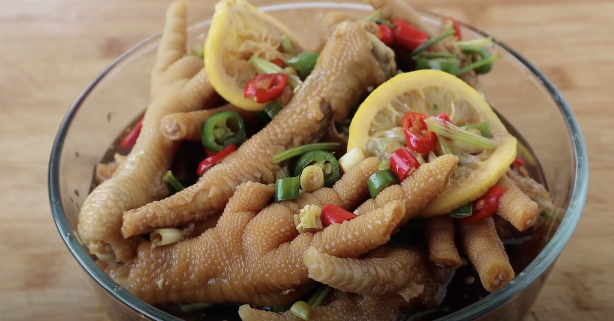

Pickled Chicken Feet

Description
Pickled chicken feet are called Pao Jiao Feng Zhua in Mandarin. It is a lovely snack for Chinese People, often served with beer or other drinks. The feet are first blanched and then quick-pickled in a mixture of vinegar, sugar, garlic, ginger, and Sichuan peppercorns. The pickled chicken feet have a unique flavor that is pungent, sour, and salty.
Ingredients
- 500 g chicken feet
- 6 cloves garlic
- 1 thumb ginger
- 2 tbsp. rock sugar
- 2 star anise
- 600 ml water
- 600 ml water
- 600 ml water
- 600 ml water
- red onion , cut into pieces
- Wash the chicken feet cleanly, remove the claws, and chop them in half or in smaller pieces so the flavors can be absorbed quickly.
- Put the chicken feet into cold water, add some ginger and spring onion which can help to remove the raw taste of chicken feet, and blanch for about 10 to 15 minutes. Do not cook too long, otherwise, the chicken feet will become quite soft and the skin can be spoiled.
- Take the chicken feet out, and wash them in the running water for a few minutes so as to get rid of the grease on the surface of the chicken feet. Then transfer the chicken feet into iced water. This will make the skin chewier and elastic.
- Put the pickled chili pepper, the water of pickled chilies, ginger, garlic, salt, rock candy, Sichuan peppers, and star anise into a bowl. Stir all the ingredients to make all the flavors integrated. Taste the sauce you have made. It should be a little bit over-salty. Then let the liquid cool down aside.
- Prepare a jar and put the cooled chicken feet, chopped onion, and celery stick into the jar, and then add the above sauce into the jar. Make sure that all the chicken feet are immersed in the sauce. Seal the jar and keep it in cold storage for two days. Then your homemade pickled chicken feet are done!
You can also make this in a large bowl and cover with plastic wrapper.